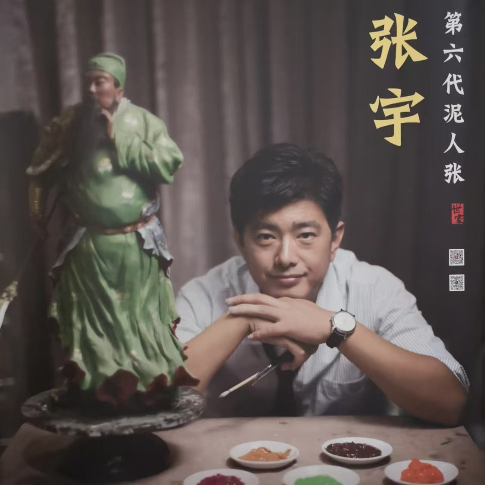

泥人张第六代传人 · 百年世家

张宇，1978年生于天津，"泥人张"世家第六代传人。自幼随父亲张乃英学习泥塑技艺，系统掌握了"泥人张"彩塑的全部技法，包括选料、揉泥、塑形、雕刻、阴干、烧制、彩绘七道核心工序。在继承家族传统的基础上，张宇不断探索创新，将现代审美融入传统泥塑创作，使百年"泥人张"艺术在当代焕发出新的生命力。
"泥人张"由张明山于清代道光年间创立，至今已有近200年历史。张明山（1826-1906）以"塑、捏、刻、画"四绝闻名，人物造型准确、表情生动，开创了中国彩塑艺术的新天地。张宇作为第六代传人，肩负着将这门百年技艺传承下去的历史使命。
《钟馗嫁妹》系列：张宇最具代表性的作品，全套作品共22尊人物塑像，每尊高约35至45厘米，神态各异、栩栩如生。钟馗的威严、钟馗妹的娇羞、小鬼的诙谐，各具性格特征，展现了张宇在群体塑像创作方面的高超技艺。该系列历时三年完成，2014年获得中国民间文艺最高奖"山花奖"金奖。
《红楼梦》人物系列：将文学经典转化为立体艺术形象，包括贾宝玉、林黛玉、薛宝钗、王熙凤等12位主要人物。张宇在创作中深入研读《红楼梦》原著，准确把握每个人物的性格特征和精神气质，造型准确、气韵生动，深受藏家和文学界好评。
《市井百态》系列：以晚清天津卫市井生活为题材，塑造了剃头匠、卖糖葫芦的小贩、说书人、拉洋车等12个社会底层人物形象，充满了浓厚的生活气息和人文关怀，展现了张宇对社会生活的深刻观察和艺术表达能力。
2014年，张宇的作品《钟馗嫁妹》获得中国民间文艺"山花奖"金奖，这是中国民间文艺界的最高荣誉。2016年，他在天津美术馆举办"泥人张六代传承展"，展出家族六代人的代表作品300余件，系统梳理了泥人张艺术近200年的发展脉络，引起学术界和媒体的广泛关注。2018年，该展览移师中国美术馆举办，进一步扩大了影响力。
2021年，张宇被评为天津市非物质文化遗产代表性传承人。2023年，他的作品《钟馗嫁妹》被中国国家博物馆收藏，成为泥人张艺术进入国家级收藏序列的重要标志。他还多次受邀参加中国国际文化产业博览会、中国民间艺术节等重要文化活动，作品深受藏家喜爱。
张宇积极推动泥人张技艺的传承与传播。他先后在天津美术学院、南开大学、天津大学举办泥塑讲座和工作坊，累计授课学生超过1000人次，培养了一批年轻泥塑爱好者和传承人。2020年，他正式收徒5名，开始了家族之外的师承传承体系。
在国际交流方面，张宇多次赴日本、韩国、法国进行文化交流，将中国彩塑艺术推向国际舞台。2019年，他受邀参加"中日韩民间工艺交流展"，作品受到三国艺术家的高度评价。2023年，他参加"一带一路"非物质文化遗产国际论坛，发表了题为《泥人张艺术的传承与创新》的主题演讲。
目前，张宇正在筹建"泥人张数字博物馆"，利用3D扫描和数字化技术，将家族六代人积累的数千件作品进行数字化保存和线上展示，为后世留下宝贵的文化遗产。他还与天津多所中小学合作，开设泥塑兴趣课程，让更多孩子接触和了解这门传统技艺。
张宇的事迹多次被中央电视台《探索·发现》栏目、天津电视台、光明日报等媒体报道。2022年，央视纪录片《手艺》第四季以《泥人张·六代传承》为题，对张宇及其家族进行了深度报道，向全国观众展示了泥人张艺术的百年传承故事。
张宇还积极参与公益事业，每年为天津SOS儿童村、特殊教育学校免费举办泥塑体验课，用艺术温暖特殊群体的心灵。2023年，他被天津市精神文明办授予"天津好人"荣誉称号。